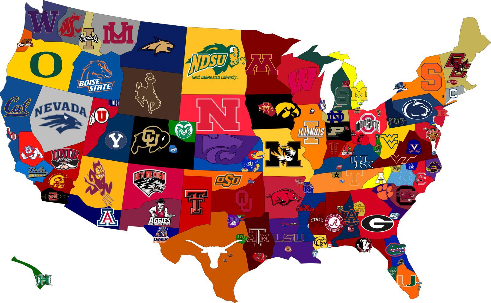
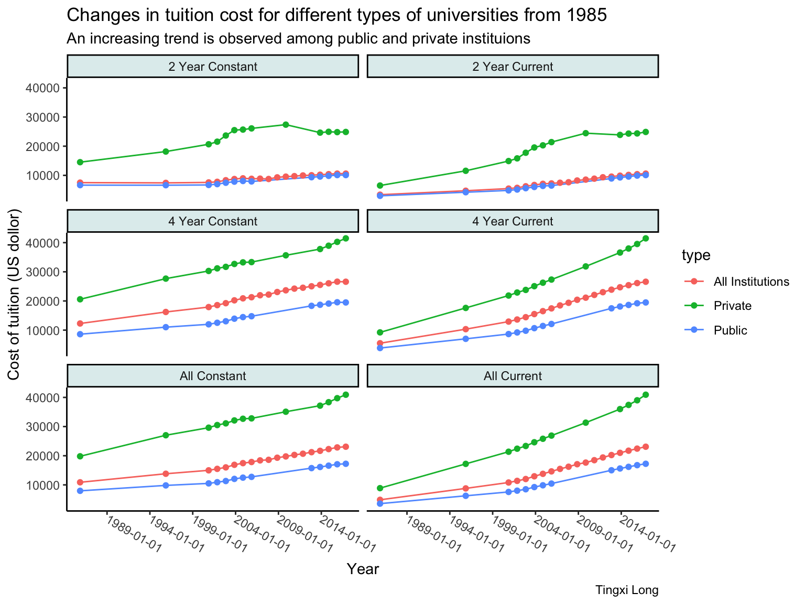
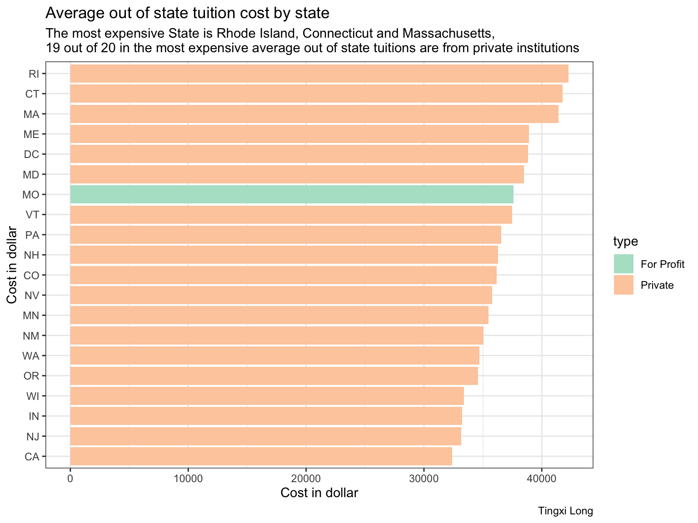
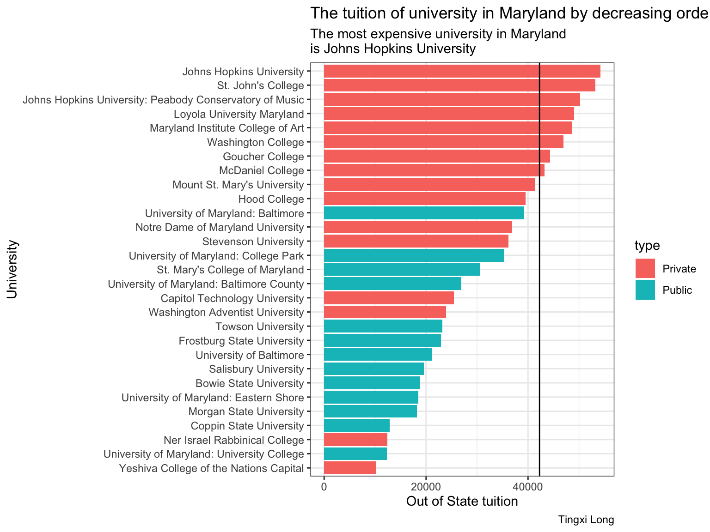

library(dplyr)
library(tidyverse)
library(ggplot2)
library(lubridate)
library(here)Example analysis
Example analysis on tuition cost for college student in the United States

Introduction
In this part, I will perform an example data analysis with R with (Mock 2022; Tuition and Fees, 1998-99 Through 2020-21 2021; National Center for Education Statistics 2022).
Objective:
- What is the trend of tuition cost among public, private and all institutions in the United States?
- What is the most expensive university in Maryland?
Intended audience:
- People who study public policy for education
- High school and college students
- Parents and teachers are also potential audiences.
Link to original data:The two datasets for this part of the assignment comes from TidyTuesday.
Note
This example analysis will only use two out of five datasets from the original tidytuesday data. More information about the diversity, salary, income related to US collges can be found in other datasets.
Data
Specifically, we will use the following data from March 2020.
To avoid re-downloading data, we will check to see if those files already exist using an if() statement:
if(!dir.exists(here("data"))) { dir.create(here("data")) }
if(!file.exists(here("data","tuesdata_cost.RDS"))){
tuesdata <- tidytuesdayR::tt_load('2020-03-10')
tuition_cost <- tuesdata$tuition_cost
hist_tuition <- tuesdata$historical_tuition
# save the files to RDS objects
saveRDS(tuesdata$tuition_cost, file = here("data","tuesdata_cost.RDS"))
saveRDS(tuesdata$hist_tuition, file = here("data","tuesdata_hist.RDS"))
}Let’s load the datasets
hist_tuition <- readRDS(here("data","tuesdata_hist.RDS"))
tuition_cost <- readRDS(here("data","tuesdata_cost.RDS"))- Here is a list of full data dictionary for what all the column names mean. The data dictionary for this example analysis is also shown below.
historical_tuition.csv
| variable | class | description |
|---|---|---|
| type | character | Type of school (All, Public, Private) |
| year | character | Academic year |
| tuition_type | character | Tuition Type All Constant (dollar inflation adjusted), 4 year degree constant, 2 year constant, Current to year, 4 year current, 2 year current |
| tuition_cost | double | Tuition cost in USD |
tuition_cost.csv
| variable | class | description |
|---|---|---|
| name | character | School name |
| state | character | State name |
| state_code | character | State Abbreviation |
| type | character | Type: Public, private, for-profit |
| degree_length | character | 4 year or 2 year degree |
| room_and_board | double | Room and board in USD |
| in_state_tuition | double | Tuition for in-state residents in USD |
| in_state_total | double | Total cost for in-state residents in USD (sum of room & board + in state tuition) |
| out_of_state_tuition | double | Tuition for out-of-state residents in USD |
| out_of_state_total | double | Total cost for in-state residents in USD (sum of room & board + out of state tuition) |
Tasks
What is the trend of tuition cost for colleges in the US?
Using the hist_tution data, find the 4-year constant tuition cost for private, public and all institutions from 1985-2016.
# 1. Add a column that just keeps the first `year`.
hist_tuition$in_year <- as.Date(as.character(substr(hist_tuition$year, 1, 4)), format = "%Y")
# 2. Plot the trend
ggplot(data=hist_tuition, aes(x=in_year, y = tuition_cost)) +
geom_line(aes(colour = type))+facet_wrap(.~tuition_type,nrow = 3)+
labs(title ="Changes in tuition cost for different types of universities from 1985",
subtitle = "An increasing trend is observed among public and private instituions", caption = "Tingxi Long")+geom_point(aes(colour=type))+
theme_classic()+theme(strip.background =element_rect(fill="azure2"))+
scale_x_date(date_breaks = "5 years", date_minor_breaks = "2 years")+
theme(axis.text.x = element_text(angle = -30, vjust = 0.5, hjust=0))+ylab("Cost of tuition (US dollor)")+xlab("Year")
Which State has the highest average tuition cost?
In this part, I will use tuition_cost to explore the tuition by university and by state in the US.
Note
We use the column out_of_state_tuition because if an institution charges in-state and out-of-state residents the same rate, the amount is repeated in the “Out-of-state” columns.
# Only include 4-year programs.
type_4c <- tuition_cost %>%
filter(degree_length == "4 Year") %>%
group_by(state_code,type) %>%
summarise(
ave_outstate=mean(out_of_state_tuition), .groups = 'drop'
)%>%
arrange(desc(ave_outstate))ggplot(head(type_4c,20), aes(fill=type,x= ave_outstate, y =fct_reorder(.f=state_code, .x = ave_outstate) ))+geom_bar(stat='identity')+
theme(axis.title.y = element_text(vjust =+3))+xlab("Cost in dollar")+ylab("Cost in dollar")+scale_fill_brewer(palette="Pastel2")+theme(axis.text.x = element_text(angle = -30, vjust = 0.5, hjust=0))+ labs(title ="Average out of state tuition cost by state",
subtitle ="The most expensive State is Rhode Island, Connecticut and Massachusetts,
19 out of 20 in the most expensive average out of state tuitions are from private institutions",
caption = "Tingxi Long") +theme_bw()
When only 4-year programs were included, the top 3 most expensive State is Rhode Island, Connecticut and Massachusetts, with average out of state cost exceeding 40,000 dollars per year. 19 out of 20 in the most expensive average out of state tuitions are from private institutions.
The most expensive universities in Maryland.
# Filter only universities in Maryland
tuition_md <- tuition_cost %>%
filter(state_code == "MD")tuition_md %>%
filter(degree_length == "4 Year") %>% # Only analyze 4-year programs
ggplot(aes(x=out_of_state_tuition, y=fct_reorder(.f=name,.x=out_of_state_tuition),fill=type))+geom_bar(stat='identity')+
theme_bw()+ labs(title ="The tuition of university in Maryland by decreasing order", subtitle = "The most expensive university in Maryland
is Johns Hopkins University", caption = "Tingxi Long")+ ylab("University")+xlab("Out of State tuition")+ geom_vline(xintercept = 42260)
Summary:
The past 20 years have seen an increasing trend in tuition cost for both private and public colleges and universities.By the 2016, the tuition cost for 4-year program in private universities is almost twice the price of the tuition cost in public universities. When only 4-year programs were included, the top 3 most expensive State for college is Rhode Island, Connecticut and Massachusetts, with average out of state cost exceeding 40,000 dollars per year with 42260.250 per year for Rhode Island. 19 out of 20 in the most expensive average out of state tuition are from private institutions.
The most expensive college in Maryland is Johns Hopkins University. 8 colleges in Maryland has an out of state tuition higher than the average out of state tuition in Rhode Island.
Functions used in dplyr and tidyr and ggplot
tidyr::
as.Date
dplyr::
filter
summarise
group_by
arrange
ggplot:
geom_point
geom_bar
geom_vlineReferences
Mock, Thomas. 2022. “Tidy Tuesday: A Weekly Data Project Aimed at the r Ecosystem.” https://github.com/rfordatascience/tidytuesday.
National Center for Education Statistics, Condition of Education. 2022. Price of Attending an Undergraduate Institution. CU.S. Department of Education, Institute of Education Sciences. https://nces.ed.gov/programs/coe/indicator/cua.
Tuition and Fees, 1998-99 Through 2020-21. 2021. The Chronicle of Higher Education. https://www.chronicle.com/article/tuition-and-fees-1998-99-through-2018-19/.